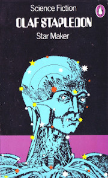
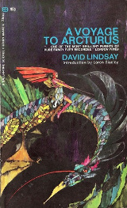
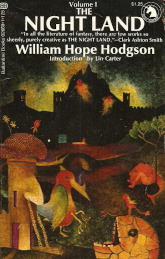
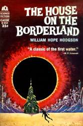
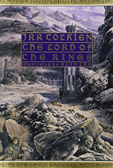
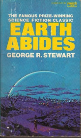
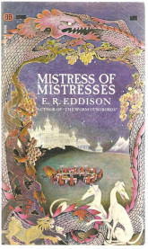

Here you'll find some of my favorite science fiction, fantasy, and cosmic horror novels. I've only become very interested in these genres quite recently, so it's still definitely a list in progress. I know a good one when I read it, although admittedly my taste tends to veer away from much of the contemporary popular fare.
|  | Star Maker by Olaf Stapledon |
|  | Voyage to Arcturus by David Lindsay |
|  | The Night Land |
|  | House on the Borderland |
|  | The Lord of the Rings |
|  | Earth Abides |
|  | Mistress of Mistresses |
Last updated June 2021